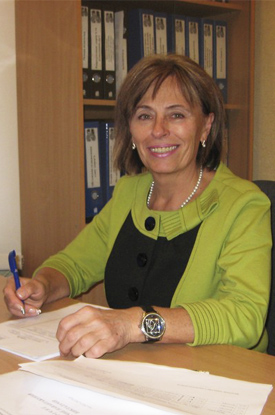

Вiтаємо!
Якщо Вам притаманні людяність, доброзичливість, милосердя і Ви вирішили присвятити своє життя служінню хворим, полегшенню їх страждань – ласкаво просимо до Харківського базового медичного коледжу №1. Наш коледж – один з найстаріших медичних закладів в Україні. Він веде відлік своєї біографії з 1 березня 1845 року, коли харківський губернатор Муханов С.М., виконуючи Постанову Сенату Російської імперії від 1832 року, видав розпорядження про відкриття фельдшерської школи при «Богоугодному заведении» на Сабуровій дачі (сучасна психоневрологічна лікарня №15). За 160 років свого існування коледж неодноразово змінював свою назву: фельдшерсько–акушерська школа, Перші курси помічників лікаря, Перший технікум «Єдиного диспансеру», знову фельдшерсько–акушерська школа і з 1954 року – базове медичне училище №1. В 2006 р – Харківський базовий медичний коледж №1. За період своєї діяльності коледж підготував понад 50 тисяч фахівців. Тривалий час контингент учнів Харківської фельдшерської школи не перебільшував 50 учнів, а викладачами клінічних предметів були найдосвіченіші лікарі Харківської губернської лікарні, в складі якої школа працювала до 1917 року. Перед ІІ світовою війною в Харківській фельдшерській школі навчалось понад 360 учнів. В роки війни лікарня і школа були зруйновані. Фельдшерська школа відновила свою діяльність 1 вересня 1943 року, одразу після визволення Харкова від окупантів, об’єднавшись з фельдшерсько–акушерською школою №2 (вул. Пушкінська, 27). З 1946 року Харківська фельдшерсько–акушерська школа працює в будинку, який займає і зараз. Це приміщення колишнього Олександрівського притулку для дітей–сиріт, відкритого в 1891 році Харківським Благодійним Товариством. В 1954 році школа отримала нову назву – медичне училище №1 і стає базовим для всіх медичних училищ Харківського регіону. Сьогодні підготовку фахівців здійснює досвідчений педагогічний колектив, до складу якого входять 6 кандидатів медичних наук, викладачі вищої та І категорій, відмінники освіти й охорони здоров’я. Колектив викладачів Харківського базового медичного коледжу №1 працює над впровадженням сучасних технологій освіти, проводить дослідницьку і пошукову роботу, тісно співпрацює з Харківським медичним університетом та Харківською Академією післядипломної освіти лікарів. Викладачами коледжу створюються оригінальні підручники, навчальні посібники. Викладачі приймають участь в розробленні нових навчальних планів і програм. В коледжі створені сучасні мікробіологічна, клінічна, хімічна, біохімічна лабораторії та лабораторія гігієни, діє 2 комп’ютерні кабінети. Студенти коледжу неодноразово ставали переможцями обласного конкурсу «Краща медична сестра» серед медичних коледжiв Харківського регіону. Молодь, яка навчається в Харківському базовому медичному коледжі №1 живе насиченим і змістовним життям. Студенти І і ІІ курсів приймають участь в практиці милосердя: надають соціально–побутову допомогу літнім громадянам м. Харкова, молодим інвалідам, готують і проводять благодійні вечори і акції. Великою популярністю в коледжі користуються святкові вечори: «Золота осінь» (конкурс талантів), День Студента, свято Нового року, День Валентина, 8 Березня, День Перемоги, День медичної сестри, День медичного працівника. Студенти з задоволенням приймають участь в Днях здоров’я, Спартакіадах, оглядах. В коледжі є чудова команда КВК – «Друге щастя», яка є переможницею Медичної Ліги КВК і є володарем Студентського Кубка м. Харкова 2000р. Проводяться цікаві екскурсії пам’ятними місцями Харківщини і України. У вільний від занять час студенти коледжу приймають участь у Студентському науковому товаристві, вони можуть оволодіти ще однією сучасною професією – масажиста, косметолога–візажиста, користувача ПК. Після закінчення Харківського базового медичного коледжа №1 молоді спеціалісти працюють в державних і приватних закладах охорони здоров’я Харкова, Харківської області, України і за кордоном.
НАША АДРЕСА
1 корпус
м. Харкiв, 61002,
узвіз Куликівський, 3
тел./факс:
706-39-66, 706-39-64
3 корпус
м. Харкiв,
вул. Гуданова, 4/10
тел. 704-13-15
2 корпус
м. Харкiв,
вул. Амосова, 3а
тел./факс:
310-01-85, 710-27-67
4 корпус та гуртожиток
м. Харкiв,
вул. Луї Пастера, 2
тел. 393-22-72
E-mail: